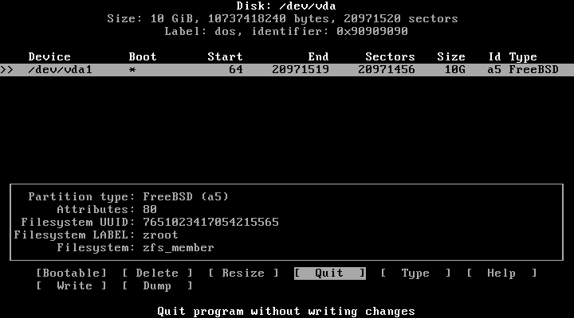

Установка дистрибутива версии >= 2.Х
Дистрибутив версии 2.0 и выше поставляется с простой в использовании псевдографической программой установки. В релизах, предшествующих 2.0, такой программы нет, и вся установка производилась вручную. Кроме того, в этих релизах не формировались загрузочные iso-образы, а генерировались squashfs-снимки. Как вы уже поняли, процесс установки старых версий Calmira GNU/Linux-libre достаточно сложен, поэтому мы специально закончили их техподдержку после выхода версии 2.0, процесс установки которой сильно упрощён.
Прочтя эту страницу документации, вы узнаете:
- Как дистрибутив видит и делит на разделы жёсткие диски.
- Как запустить
calminstall. - Как работать с
calminstall.
Системные требования
| Пункт | Минимальные требования | Рекомендуемые требования |
|---|---|---|
| ЦП | x86_64 > 900 МГц | x86_64 1 ГГц |
| ОЗУ | 64 Мб | 128 Мб |
| Жёсткий диск | HDD 1.5 Гб | SSD 5 Гб |
| Сеть | -- | Наличие сетевого адаптера1 |
в дистрибутиве используется ядро Linux-libre, которое было очищено от несвободных драйверов, прошивок и блобов. Это значит, что некоторое оборудование (как правило, это сетевые, звуковые и видеокарты) в ОС не поддерживаются, т.е. либо не будут определяться в системе вообще, либо просто не будут корректно работать. В том случае, если что-то из вашего оборудования не поддерживается, попробуйте переключиться на обычное ядро Linux с проприетарными несвободными компонентами [оно входит в минимальную поставку дистрибутива; переключиться можно, выбрав в меню загрузчика ОС соответствующий пункт]. Если не помогло и это, то отправьте нам issue об этом на нашем GitLab. Опишите поведение дистрибутива, версии программного обеспечения (ядро Linux-libre и Linux),тип оборудования, с которым возникли проблемы, его модель и прочие подобные сведения.
Разделы диска для дистрибутива
Диск ПК делится на отдельные части, которые называются разделами. Каждая
операционная система определяет разделы своим способом. К примеру, MS-DOS и её
потомки, такие, как Windows, присваивает каждому главному и логическому разделу
букву диска, например, A:, B:, C:, D: и т.д. А, например,
операционные системы семейства GNU/Linux, именуют диски и разделы так:
/dev/XdYN, где X и Y - определённая буква диска, а N - номер раздела на
этом диске. X определяет тип диска (h - диск IDE, s - диск SATA), y -
сам диск (a - главный диск, b, c, d... - съёмные диски).
К примеру, sda3 - это третий раздел (3) главного жёсткого диска (a) типа
SATA (s). Таблица ниже поможет определить тип диска
| Тип устройства | Дескриптор устройства | Примечания |
|---|---|---|
| SATA, SCSI, USB Flash | sda, sdb, sdc... | Стал доступен где-то в 2007 году и встречается до сих пор. Наверно, на данный момент самый используемый в GNU/Linux тип. |
| NVMe | nvme0n1 | Передовая технология накопителей. Устройства NVMe подключаются к шине PCI Express и обладают наиболее высокой скоростью передачи данных. Первый раздел на первом NVMe накопителе обозначается как nvme0n1p1. Поддержка таких устройств в ядре Calmira GNU/Linux-libre есть, но не протестирована. Если у вас есть возможность протестировать систему на таком накопителе, оставьте issue на GitLab CalmiraLinux. |
| MMC, eMMC, SD | mmcblk0 | SD-карты, MMC и embedded MMC устройства. Используются для хранения данных. ВНИМАНИЕ: не все устройства могут иметь возможность загрузки с этих накопителей. ВНИМАНИЕ: цикл чтения/записи у таких устройств ограничен куда более, чем у накопителей выше. Поэтому настоятельно не рекомендуется использовать их для установки туда какой-либо операционной системы. Лучше используйте их для переноса файлов, хранения мультимедиа-контента или для кратковременного резервного копирования данных. |
Принцип "всё есть файл"
Операционная система UNIX воспринимает многие вещи как файлы. Даже устройства. Файлы устройств содержатся в директории
/dev. Поэтому если в данном руководстве указывается что-то вроде разделsdc4(или что-то вроде этого), то знайте, что здесь подразумевается раздел/dev/sdc4.
Начало установки
Вставьте загрузочный носитель в ПК и загрузитесь с него. Вас будет приветствовать меню загрузки:

Вам нужно выбрать пункт "Build Calmira GNU/Linux-libre". Для этого выберите данный пункт стрелками клавиш и нажмите Enter. Во время загрузки на экран будут выведены сообщения о процессе старта системы. Как правило, пользователю они нужны будут только в том случае, если во время загрузки системы произошла какая-либо ошибка. К примеру, система не загрузится, если вы загружаете её iso-образ с помощью программы Ventoy.
После окончания загрузки система запросит ваш логин и пароль:

Введите следующие данные:
- Логин:
root - Пароль:
root
После логина вас будет приветствовать диалоговое окно:

Вам будет предложено 3 пункта:
- Install - запускает установщик системы;
- Live CD Shell - это диалоговое окно закрывается и вы переходите в оболочку BASH загруженной ОС;
- Power off - выключение/перезагрузка компьютера.
Для запуска установщика выберите пункт 1.
В том случае, если вы выбрали второй пункт, вы окажетесь в оболочке системы. Если вы захотите позже запустить установщик, введите команду
calminstall.
Сбор начальных сведений
Выбор раскладки клавиатуры
Для начала установщик запросит у вас раскладку клавиатуры, которая будет использоваться в дистрибутиве после установки. Заметьте, что по умолчанию у вас будет всегда английская раскладка, а та, которую вы выбираете, будет второй.
Используя клавиши навигации найдите нужную вам раскладку и нажмите Enter для её выбора.
Установка имени хоста
Далее установщик запросит имя хоста для устанавливаемой системы.
Выбор устанавливаемых компонентов
Выберите дополнительные компоненты, которые вы хотите установить в систему.
Заметьте, что менеджер системы портов cport, как и сама система портов, не
входят в состав базовой системы и являются опциональными. Если вы не выберите
пункт ports.txz, то вы не сможете управлять программным обеспечением в Calmira
централизованным и простым путём. Однако, вы можете самостоятельно находить
архивы с программным обеспечением (как исходный код, так и уже собранное ПО).
Однако это достаточно сложный и небезопасный способ. Система портов - это
простой и удобный способ управления программами. Она не содержит исходного кода
ПО. Система портов состоит из множества файлов с информацией о ПО, а также
со сборочными инструкциями для автоматизации загрузки, компиляции и установки
программ.
Если вы устанавливаете редакцию Extended (расширенную), то обязательно выберите
пункт extended.txz, иначе ничего из расширенной редакции установлено не будет.
В зависимости от содержимого установочного iso-образа, а также от редакции дистрибутива, содержимое меню будет различаться. Все пункты приведены в списке ниже:
development.txz- программное обеспечение для разработчиков;doc.txz- документация Calmira GNU/Linux-libre;ports.txz- система портов иcport;src.txz- исходный код системы;linux.txz- обычное ядро Linux (по умолчанию устанавливается Linux-libre);extended.txz- расширенная редакция дистрибутива. Включает в себя сервер Xorg и рабочее окружение Anomura;
Внимание!
Учтите, что программа установки не проверяет наличие свободного места на диске. Поэтому, когда вы выбираете тот или иной пункт, будьте уверены, что вам хватит для него места. К примеру, исходный код системы может занимать от 1 до 3 Гб дискового пространства, а пересборка всей системы может затребовать от 5 до 20 Гб.
Работа с дисками
Есть два способа осуществить разбиение дискового пространства для установки дистрибутива. Автоматическое разбиение самостоятельно настроит разделы диска, ручное разбиение даст возможность пользователю разметить жёсткий диск согласно своим требованиям. Требуется учесть, что автоматическое разбиение уничтожит все существующие разделы, создав на их месте необходимые для дистрибутива. Если на жёстком диске уже установлена какая-то операционная система, то она будет уничтожена.
В случае использования ручного разбиения запускается программа /sbin/cfdisk,
которая позволяет пользователю самостоятельно создавать, удалять и изменять
разделы на жёстком диске. В таком случае после разметки диска установщик
запросит у вас некоторые данные вроде корневого раздела (/), раздела /home,
раздела подкачки и пр.
После выбора ручной разметки вы увидите следующее окно:

Внимание!
На данный момент функция автоматического разбиения диска нестабильна, поэтому по умолчанию отключена. Дождитесь следующих версий Calmira GNU/Linux-libre для использования этой опции.
Завершение сбора сведений и разметки дисков
Следующий шаг - ваш последний шанс прервать установку. Далее последует
монтирование созданных разделов, создание необходимых файлов и каталогов и,
наконец, распаковка архивов с системой. Как только все выбранные архивы
распакуются, calminstall начнёт исполнять скрипты для настройки установленной
системы.
Установка пароля root
Установка root-пароля обязательна. Заметьте, что во время ввода пароля для
всех пользователей набираемые символы не отображаются на экране. После ввода
пароля он будет запрошен ещё раз для предотвращения опечаток при наборе.
Создание пользователя
Далее установщик запросит у вас имя обычного пользователя. После ввода имени создайте пароль нового пользователя. Всё также, как и в предыдущем пункте: символы пароля не отображаются на экране, ввод пароля повторится ещё один раз для исключения возможности опечататься при вводе.